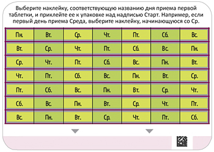
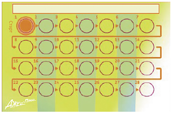
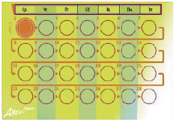
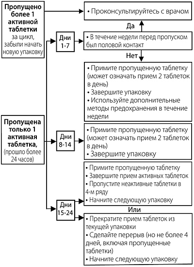

|
 |
| ДЖЕС® ПЛЮС (YAZ® PLUS) drospirenone, ethinylestradiol, levomefolate calcium таб., покр. пленочной оболочкой | ||||||||||||||||||||||||||||||||||||||||||||||||||||||||||||||||||||||||||||||||||||||||||||||||||||||||||||||||||||||||||||||
|
Клинико-фармакологическая группа: Контрацептивный комбинированный препарат (эстроген+гестаген+кальция левомефолат) Номер и дата регистрации: ЛП-001189 от 11.11.11 Код ATX: G03AA12 |
Владелец регистрационного удостоверения: зарегистрировано Представительство: | |||||||||||||||||||||||||||||||||||||||||||||||||||||||||||||||||||||||||||||||||||||||||||||||||||||||||||||||||||||||||||||
Форма выпуска, состав и упаковка Набор таблеток, покрытых пленочной оболочкой (таблетки с комбинацией действующих веществ и вспомогательные витаминные). Таблетки, покрытые пленочной оболочкой (с комбинацией действующих веществ) розового цвета, круглые, двояковыпуклые, на одной стороне с тиснением "Z+" в правильном шестиугольнике; (24 шт. в блистере).
Вспомогательные вещества: лактозы моногидрат - 45.329 мг, целлюлоза микрокристаллическая - 24.8 мг, кроскармеллоза натрия - 3.2 мг, гипролоза (5 cP) - 1.6 мг, магния стеарат - 1.6 мг. Состав оболочки: лак розовый - 2 мг или (альтернативно): гипромеллоза (5 cP) - 1.0112 мг, макрогол 6000 - 0.2024 мг, тальк - 0.2024 мг, титана диоксид - 0.558 мг, краситель железа оксид красный - 0.026 мг. Таблетки, покрытые пленочной оболочкой (вспомогательные витаминные) светло-оранжевого цвета, круглые, двояковыпуклые, на одной стороне с тиснением "M+" в правильном шестиугольнике; (4 шт. в блистере).
Вспомогательные вещества: лактозы моногидрат - 48.349 мг, целлюлоза микрокристаллическая - 24.8 мг, кроскармеллоза натрия - 3.2 мг, гипролоза (5 cP) - 1.6 мг, магния стеарат - 1.6 мг. Состав оболочки: лак светло-оранжевый - 2 мг или (альтернативно): гипромеллоза (5 cP) - 1.0112 мг, макрогол 6000 - 0.2024 мг, тальк - 0.2024 мг, титана диоксид - 0.5723 мг, краситель железа оксид желтый - 0.0089 мг, краситель железа оксид красный - 0.0028 мг. 28 шт. (набор: 24 таблетки с комбинацией действующих веществ и 4 вспомогательные витаминные таблетки) - упаковки ячейковые контурные (блистеры) (1) - книжки-раскладушки (1) с вклеенным блоком самоклеящихся наклеек для оформления календаря приема - пленка×. × На прозрачную пленку наносится упаковочный стикер. | ||||||||||||||||||||||||||||||||||||||||||||||||||||||||||||||||||||||||||||||||||||||||||||||||||||||||||||||||||||||||||||||
| ||||||||||||||||||||||||||||||||||||||||||||||||||||||||||||||||||||||||||||||||||||||||||||||||||||||||||||||||||||||||||||||
Описание препарата основано на официально утвержденной инструкции по применению и утверждено компанией-производителем для издания 2023 г. | ||||||||||||||||||||||||||||||||||||||||||||||||||||||||||||||||||||||||||||||||||||||||||||||||||||||||||||||||||||||||||||||
Фармакологическое действие |
Фармакокинетика |
Показания |
Режим дозирования |
Побочное действие |
Противопоказания |
Беременность и лактация |
Особые указания |
Передозировка |
Лекарственное взаимодействие |
Условия хранения и сроки годности |
Условия реализации
Фармакологическое действие
Джес® Плюс - низкодозированный монофазный комбинированный эстроген-гестагенный контрацептивный препарат, состоящий из таблеток, содержащих гормоны и кальция левомефолат, и вспомогательных таблеток, содержащих только кальция левомефолат. Контрацептивный эффект комбинированных пероральных контрацептивных препаратов (КОК) основан на взаимодействии различных факторов, наиболее важными из которых являются подавление овуляции, повышение вязкости секрета шейки матки и изменения в эндометрии. У женщин, принимающих КОК, менструальный цикл становится более регулярным, уменьшаются болезненность, интенсивность и продолжительность менструальноподобных кровотечений, в результате чего снижается риск развития железодефицитной анемии. Имеются также данные о снижении риска развития рака эндометрия и яичников. Дроспиренон, входящий в состав препарата Джес® Плюс, обладает антиминералокортикоидной активностью и способствует предупреждению гормонозависимой задержки жидкости, что может проявляться в снижении массы тела и уменьшении вероятности появления периферических отеков, что обеспечивает хорошую переносимость препарата. Дроспиренон оказывает положительное воздействие на предменструальный синдром. В сочетании с этинилэстрадиолом дроспиренон демонстрирует благоприятный эффект на липидный профиль, характеризующийся повышением ЛПВП. Дроспиренон также обладает антиандрогенной активностью и способствует уменьшению угрей (акне), жирности кожи и волос (себореи). Эти особенности дроспиренона следует учитывать при выборе контрацептива женщинам с гормонозависимой задержкой жидкости, а также женщинам с акне и себореей. Дроспиренон не обладает андрогенной, эстрогенной, глюкокортикоидной и антиглюкокортикоидной активностью. Все это в сочетании с антиминералокортикоидным и антиандрогенным действием обеспечивает дроспиренону биохимический и фармакологический профиль, сходный с естественным прогестероном. При правильном применении препарата индекс Перля (показатель, отражающий число беременностей у 100 женщин, применяющих контрацептив в течение года) составляет менее 1. При пропуске таблеток или неправильном применении препарата индекс Перля может возрастать. Кислотная форма кальция левомефолата по своей структуре идентична естественному L-5-метилтетрагидрофолату (L-5-метил-ТГФ), основной фолатной форме, содержащейся в пище. Средняя концентрация L-5-метилтетрагидрофолата в плазме крови людей, не использующих пищу, обогащенную фолиевой кислотой, составляет около 15 нмоль/л. Левомефолат, в отличие от фолиевой кислоты, является биологически активной формой фолата, благодаря чему он усваивается лучше, чем фолиевая кислота. Дефицит фолатов коррелирует с повышенным риском развития дефектов нервной трубки плода. Прием левомефолата кальция рекомендован женщинам до беременности для удовлетворения повышенной потребности в фолатах на ранних стадиях беременности. Для достижения оптимального уровня фолатов может потребоваться несколько недель. Фармакокинетика
Дроспиренон Всасывание После приема внутрь дроспиренон быстро и почти полностью абсорбируется. После однократного приема внутрь Cmax дроспиренона в плазме крови, равная 38 нг/мл, достигается через 1-2 ч. Прием пищи не влияет на биодоступность, которая колеблется в диапазоне от 76% до 85%. Распределение После приема внутрь наблюдается двухфазное снижение концентрации дроспиренона в плазме крови с T1/2 соответственно 1.6±0.7 ч и 27±7.5 ч. Дроспиренон связывается с сывороточным альбумином и не связывается с глобулином, связывающим половые гормоны (ГСПГ), или кортикостероид-связывающим глобулином (КСГ). Лишь 3-5% общей концентрации вещества в сыворотке присутствует в качестве свободного гормона. Индуцированное этинилэстрадиолом повышение ГСПГ не влияет на связывание дроспиренона белками плазмы крови. Средний кажущийся Vd составляет 3.7±1.2 л/кг. Равновесная концентрация. Во время первого курсового применения препарата Сss дроспиренона в плазме крови около 70 нг/мл достигается через 8 дней после начала применения препарата. Отмечалось повышение концентрации дроспиренона в плазме крови примерно в 2-3 раза (за счет кумуляции), что обусловливалось соотношением Т1/2 в терминальной фазе и интервала дозирования. Дальнейшее увеличение концентрации дроспиренона в плазме крови отмечается через 1-6 курсов применения препарата, после чего увеличения концентрации не наблюдается. Метаболизм После приема внутрь дроспиренон интенсивно метаболизируется. Большинство метаболитов в плазме представлены кислотными формами дроспиренона. Дроспиренон также является субстратом для окислительного метаболизма, катализируемого изоферментом CYP3A4. Выведение Скорость метаболического клиренса дроспиренона в плазме крови составляет 1.5±0.2 мл/мин/кг. В неизмененном виде дроспиренон экскретируется только в следовых количествах. Метаболиты дроспиренона экскретируются через ЖКТ и почки в соотношении примерно 1.2:1.4. T1/2 метаболитов - около 40 ч. Фармакокинетика у особых групп пациентов Нарушения функции почек. Исследования показали, что концентрация дроспиренона в плазме крови женщин с почечной недостаточностью легкой степени (КК 50-80 мл/мин) при достижении равновесного состояния и у женщин с нормальной функцией почек (КК более 80 мл/мин) сопоставимы. Тем не менее, у женщин с почечной недостаточностью средней степени тяжести (КК 30-50 мл/мин) средняя концентрация дроспиренона в плазме крови была на 37% выше, чем у пациенток с нормальной функцией почек. Не отмечено изменения концентрации калия в плазме крови при применении дроспиренона. Фармакокинетика дроспиренона не изучалась у пациенток с почечной недостаточностью тяжелой степени. Нарушения функции печени. У женщин с печеночной недостаточностью средней степени тяжести (класс B по шкале Чайлд-Пью) AUC сопоставима с соответствующим показателем у здоровых женщин с близкими значениями Сmax в фазах абсорбции и распределения. Т1/2 дроспиренона у больных с печеночной недостаточностью средней степени тяжести оказался в 1.8 раз выше, чем у здоровых добровольцев с нормальной функцией печени. У больных с печеночной недостаточностью средней степени тяжести отмечено снижение клиренса дроспиренона около 50% по сравнению с женщинами с нормальной функцией печени, при этом не отмечено различий в концентрации калия в плазме крови в изучаемых группах. Не отмечено изменений концентрации калия даже в случае сочетания факторов, предрасполагающих к его повышению (сопутствующий сахарный диабет или лечение спиронолактоном). Фармакокинетика дроспиренона не изучалась у пациенток с печеночной недостаточностью тяжелой степени. Этническая принадлежность. Не установлено влияния этнической принадлежности (исследование проведено на когортах женщин европеоидной расы и японок) на параметры фармакокинетики дроспиренона и этинилэстрадиола. Этинилэстрадиол Всасывание После приема внутрь этинилэстрадиол быстро и полностью абсорбируется. Cmax - около 33 пг/мл, достигается в течение 1-2 ч после однократного приема внутрь. Абсолютная биодоступность в результате пресистемного конъюгирования и метаболизма при "первом прохождении" через печень составляет приблизительно 60%. Сопутствующий прием пищи снижает биодоступность этинилэстрадиола примерно у 25% обследованных, тогда как у других испытуемых подобных изменений не отмечалось. Распределение Концентрация этинилэстрадиола в плазме крови снижается двухфазно, T1/2 этинилэстрадиола во второй фазе составляет около 24 ч. Этинилэстрадиол неспецифически, но прочно связывается с альбумином плазмы крови (около 98.5%) и индуцирует повышение концентрации в плазме ГСПГ. Предполагаемый Vd составляет около 5 л/кг. Равновесная концентрация. Сss достигается во второй половине цикла приема препарата, концентрация этинилэстрадиола в плазме крови увеличивается примерно в 1.4-2.1 раза. Метаболизм Этинилэстрадиол подвергается значительному первичному метаболизму в кишечнике и печени. Этинилэстрадиол и его окислительные метаболиты первично конъюгированы с глюкуронидами или сульфатом. Скорость метаболического клиренса этинилэстрадиола составляет около 5 мл/мин/кг. Выведение Этинилэстрадиол практически не выводится в неизмененном виде. Метаболиты этинилэстрадиола выводятся почками и через кишечник в соотношении 4:6. Т1/2 метаболитов составляет примерно 24 ч. Кальция левомефолат Всасывание После приема внутрь кальция левомефолат быстро абсорбируется и включается в пул фолатов организма. После однократного приема внутрь 451 мкг кальция левомефолата через 0.5-1.5 ч Cmax становится на 50 нмоль/л выше исходной концентрации. Распределение Фармакокинетика фолатов имеет двухфазный характер: определяются пул фолатов с быстрым и с медленным метаболизмом. Пул с быстрым метаболизмом, вероятно, представляют вновь поступившие в организм фолаты, что согласуется с T1/2 кальция левомефолата, который составляет около 4-5 ч после его однократного приема внутрь в дозе 451 мкг. Пул с медленным метаболизмом отражает превращение полиглутамата фолата, Т1/2 которого составляет около 100 дней. Поступающие извне фолаты и фолаты, проходящие кишечно-печеночный цикл, обеспечивают поддержание постоянной концентрации L-5-метил-ТГФ в организме. L-5-метил-ТГФ представляет основную форму существования фолатов в организме, в которой они доставляются к периферическим тканям для участия в клеточном фолатном метаболизме. Равновесная концентрация. Сss L-5-метил-ТГФ в плазме крови после приема внутрь 451 мкг кальция левомефолата достигается через 8-16 недель и зависит от его исходной концентрации. В эритроцитах Css достигается в более поздние сроки из-за продолжительности жизни эритроцитов, которая составляет около 120 дней. Метаболизм L-5-метил-ТГФ представляет основную фолатную транспортируемую форму в плазме крови. При сравнении 451 мкг кальция левомефолата и 400 мкг фолиевой кислоты были установлены сходные механизмы метаболизма и для других значимых фолатов. Коферменты фолатов вовлечены в 3 основные сопряженные цикла метаболизма в цитоплазме клеток. Эти циклы необходимы для синтеза тимидина и пуринов, предшественников ДНК и РНК кислот, а также для синтеза метионина из гомоцистеина и превращения серина в глицин. Выведение L-5-метил-ТГФ выводится почками в неизмененном виде и в виде метаболитов, а также через ЖКТ. Показания
Режим дозирования
Когда и как принимать таблетки Таблетки следует принимать внутрь по порядку, указанному на упаковке, каждый день в одно и то же время, не разжевывая, запивая небольшим количеством воды. Принимают по 1 таб./сут непрерывно в течение 28 дней. Прием таблеток из следующей упаковки начинается сразу после завершения приема предыдущей упаковки. Кровотечение "отмены", как правило, начинается на 2-3 день после начала приема таблеток, не содержащих гормонов, и может еще не завершиться до начала приема таблеток из следующей упаковки. Прием таблеток из первой упаковки препарата Джес® Плюс При отсутствии приема каких-либо гормональных контрацептивов в предыдущем месяце Прием препарата Джес® Плюс следует начинать в 1-й день менструального цикла (т.е. в 1-й день менструального кровотечения). В этот день необходимо принять одну розовую (содержащую гормоны) таблетку, которая промаркирована соответствующим днем недели. Затем следует принимать таблетки по порядку. Допускается начинать прием препарата на 2-5-й день менструального цикла, но в этом случае в течение первых 7 дней приема розовых таблеток необходимо дополнительно использовать барьерный метод контрацепции (например, презерватив). При переходе с других комбинированных контрацептивных препаратов (КОК, контрацептивного вагинального кольца или контрацептивного пластыря) Предпочтительно начать прием препарата Джес® Плюс на следующий день после приема последней активной таблетки, содержащей гормоны, из упаковки предыдущего КОК , но ни в коем случае не позднее следующего дня после обычного 7-дневного перерыва (для препаратов, содержащих 21 таблетку) или после приема последней таблетки, не содержащей гормонов (для препаратов, содержащих 28 таблеток в упаковке). Начинать прием препарата Джес® Плюс следует после обычного перерыва в приеме активных таблеток в случае перехода с контрацептивных препаратов с пролонгированным режимом применения. Прием препарата Джес® Плюс следует начинать в день удаления вагинального кольца или пластыря, но не позднее дня, когда должно быть введено новое кольцо или наклеен новый пластырь. При переходе с контрацептивов, содержащих только гестагены ("мини-пили", инъекционные формы, имплантат), или с внутриматочной терапевтической системы с высвобождением гестагена Перейти с "мини-пили" на препарат Джес® Плюс можно в любой день (без перерыва), с имплантата или внутриматочного контрацептива с гестагеном - в день их удаления, с инъекционного контрацептива – в день, когда должна быть сделана следующая инъекция. Во всех случаях в течение первых 7 дней приема препарата Джес® Плюс необходимо дополнительно использовать барьерный метод контрацепции (например, презерватив). После аборта (в т.ч. самопроизвольного) в I триместре беременности Начать прием препарата можно немедленно. При соблюдении этого условия дополнительных мер контрацепции не требуется. После родов (при отсутствии грудного вскармливания) или аборта (в т.ч. самопроизвольного) во II триместре беременности Рекомендуется начать прием препарата на 21-28-й день после родов или аборта (в т.ч. самопроизвольного) во II триместре беременности. Если прием препарата начат позднее, необходимо использовать дополнительно барьерный метод контрацепции в течение первых 7 дней приема таблеток. Однако если половой контакт имел место, до начала приема препарата Джес® Плюс следует исключить беременность. Правила обращения с упаковкой препарата Джес® Плюс В раскладывающуюся упаковку препарата Джес® Плюс вклеен блистер, содержащий 24 розовые таблетки и 4 вспомогательные (светло-оранжевые) таблетки (нижний ряд). Упаковка также содержит блок наклеек, состоящий из 7 самоклеящихся полосок с отмеченными на них названиями дней недели, необходимый для оформления календаря приема. Необходимо выбрать полоску, где первым указан тот день недели, в который начинается прием таблеток. Например, если начало приема таблеток приходится на среду, следует использовать полоску, которая начинается со "Ср." (см. рис. 1).  Рис. 1 Полоску наклеивают вдоль верхней части упаковки так, чтобы обозначение первого дня находилось над той таблеткой, на которую направлена стрелка с надписью "Старт" (рис. 2).  Рис. 2 Таким образом, будет видно, в какой день недели следует принять каждую таблетку (рис. 3).  Рис. 3 Прием пропущенных таблеток Пропуск вспомогательных светло-оранжевых таблеток можно игнорировать. Однако пропущенные таблетки следует выбросить, чтобы случайно не продлить период приема вспомогательных таблеток. Следующие рекомендации относятся только к пропуску активных розовых таблеток (таблетки 1-24 в упаковке). Если опоздание в приеме розовой таблетки составило менее 24 ч, контрацептивная защита не снижается. Женщина должна принять пропущенную таблетку как можно скорее, а следующие принимать в обычное время. Если опоздание в приеме розовой таблетки составило более 24 ч, контрацептивная защита может быть снижена. Чем больше таблеток пропущено и чем ближе пропуск таблеток к фазе приема светло-оранжевых (вспомогательных) таблеток, тем выше вероятность беременности. При этом необходимо помнить:
Соответственно, если опоздание в приеме розовых (активных) таблеток составило более 24 ч, необходимо сделать следующее: С 1-го по 7-й день Женщина должна принять последнюю пропущенную таблетку сразу, как только вспомнит об этом, даже если это означает прием 2 таблеток одновременно. Следующие таблетки необходимо принимать в обычное время. Кроме того, в течение последующих 7 дней необходимо дополнительно использовать барьерный метод контрацепции (например, презерватив). Если половой контакт имел место в течение 7 дней перед пропуском таблетки, следует учесть возможность наступления беременности. С 8-го по 14-й день Женщина должна принять последнюю пропущенную таблетку сразу, как только вспомнит об этом, даже если это означает прием 2 таблеток одновременно. Следующие таблетки она продолжает принимать в обычное время. При условии соблюдения режима приема таблеток в течение 7 дней, предшествующих первой пропущенной таблетке, нет необходимости в использовании дополнительных мер контрацепции. В противном случае, а также при пропуске двух и более таблеток, необходимо дополнительно использовать барьерные методы контрацепции (например, презерватив) в течение последующих 7 дней. С 15-го по 24-й день Риск снижения контрацептивной надежности неизбежен из-за приближающейся фазы приема светло-оранжевых (вспомогательных) таблеток. В этом случае необходимо придерживаться следующих алгоритмов:
1. Принять пропущенную таблетку как можно скорее, как только женщина вспомнит об этом (даже если это означает прием 2 таблеток одновременно). Следующие таблетки принимают в обычное время, пока не закончатся розовые таблетки в упаковке. Четыре светло-оранжевые (вспомогательные) таблетки следует выбросить и незамедлительно начать прием розовых таблеток из новой упаковки. Пока не закончатся розовые таблетки из второй упаковки, кровотечение "отмены" маловероятно, однако могут отмечаться "мажущие" выделения и/или "прорывные" кровотечения. 2. Прервать прием розовых таблеток из текущей упаковки, затем сделать перерыв на 4 или менее дней (включая дни пропуска таблеток), после чего начать прием препарата из новой упаковки. Если женщина пропустила прием розовых (активных) таблеток и во время приема светло-оранжевых (вспомогательных) таблеток кровотечение "отмены" не наступило, необходимо удостовериться в отсутствии беременности. Для удобства данная информация представлена на упаковке в виде следующей схемы:  Допускается принимать не более 2 таблеток в один день. Рекомендации при желудочно-кишечных расстройствах При тяжелых желудочно-кишечных расстройствах всасывание препарата может быть неполным, поэтому следует принять дополнительные контрацептивные меры. Если в течение 3-4 ч после приема розовой таблетки произойдет рвота или диарея, следует ориентироваться на рекомендации при пропуске таблеток. Если женщина не хочет менять свою обычную схему приема и переносить начало менструации на другой день недели, дополнительную розовую таблетку следует принять из другой упаковки. Прекращение приема препарата Джес® Плюс Прием препарата Джес® Плюс можно прекратить в любое время. Если женщина не планирует беременность, следует позаботиться о других методах контрацепции. Если планируется беременность, следует просто прекратить прием препарата Джес® Плюс, дождаться естественного менструального кровотечения, и уже потом пытаться забеременеть. Это поможет более точно рассчитать срок беременности и время родов. Отсрочка начала менструальноподобного кровотечения Чтобы отсрочить наступление кровотечения отмены следует пропустить прием 4 светло-оранжевых (вспомогательных) таблеток из текущей упаковки и начать прием розовых таблеток из следующей упаковки препарата Джес® Плюс. Если были приняты все 24 розовые таблетки из второй упаковки, в этом случае следует принять также и 4 светло-оранжевые таблетки. Только после этого можно начать прием таблеток из новой упаковки. Таким образом, цикл может быть продлен, по желанию, на любой срок, вплоть до того момента, пока не будут приняты все розовые таблетки из второй упаковки. Если женщина хочет, чтобы менструальноподобное кровотечение началось раньше, следует прекратить прием розовых таблеток из второй упаковки, выбросить ее и сделать перерыв в приеме всех таблеток не более чем на 4 дня, а затем начать прием таблеток из новой упаковки. В этом случае менструальноподобное кровотечение начнется примерно через 2-3 дня после приема последней розовой таблетки из второй упаковки. Во время приема препарата Джес® Плюс из второй упаковки могут отмечаться "мажущие" выделения и/или "прорывные" кровотечения в дни приема розовых таблеток. Изменение дня начала менструальноподобного кровотечения Если таблетки препарата принимаются в соответствии с рекомендациями, менструальноподобные кровотечения будут наступать примерно в один и тот же день каждые 4 недели. Если женщина хочет изменить день начала менструальноподобного кровотечения, следует прекратить прием светло-оранжевых таблеток на столько дней, на сколько женщина хочет изменить начало менструальноподобного кровотечения. Например, если цикл обычно начинается в пятницу, а в будущем женщина хочет, чтобы он начинался во вторник (3 днями ранее), прием таблеток из следующей упаковки следует начать на 3 дня раньше, чем обычно, то есть не использовать 3 последние светло-оранжевые таблетки из текущей упаковки и начать прием таблеток из следующей упаковки. Чем меньше светло-оранжевых таблеток женщина примет, тем выше вероятность, что менструальноподобное кровотечение не наступит. Во время приема препарата Джес® Плюс из следующей упаковки могут отмечаться "мажущие" выделения и/или "прорывные" кровотечения. Применение у отдельных групп пациенток Девочки-подростки. Препарат Джес® Плюс показан только после наступления менархе. Имеющиеся данные не предполагают коррекции дозы у данной группы пациенток. Пациентки пожилого возраста. Препарат Джес® Плюс не применяется после наступления менопаузы. Пациентки с нарушением функции печени. Препарат противопоказан к применению у женщин с тяжелыми нарушениями функции печени (см. также разделы "Противопоказания" и "Фармакокинетика"). Пациентки с нарушением функции почек. Препарат противопоказан к применению у женщин с тяжелыми нарушениями функции почек и при острой почечной недостаточности (см. также разделы "Противопоказания" и "Фармакокинетика"). Побочное действие
Наиболее распространенные побочные реакции, о которых сообщалось в связи с применением препарата Джес®, следующие: тошнота, боль в молочных железах, нерегулярные маточные кровотечения, кровотечения из половых путей неуточненного генеза (более чем у 3% женщин, применяющих препарат по показаниям "Контрацепция" и "Контрацепция и лечение умеренной формы угрей (acne vulgaris)"); тошнота, боль в молочных железах, нерегулярные маточные кровотечения (более чем у 10% женщин, применяющих препарат по показанию "Контрацепция и лечение тяжелой формы предменструального синдрома (ПМС)"). Серьезными побочными реакциями являются АТЭ и ВТЭ. Ниже в таблице приведена частота побочных реакций, о которых сообщалось в ходе клинических исследований препаратов Джес® и Джес® Плюс по показанию "Контрацепция", а также по показаниям "Контрацепция и лечение умеренной формы угрей (acne vulgaris)" (n=3565) и "Контрацепция и лечение тяжелой формы предменструального синдрома (ПМС)" (n=289) для препарата Джес®. В пределах каждой группы, выделенной в зависимости от частоты возникновения, побочные реакции представлены в порядке уменьшения их тяжести. Определение категорий частоты побочных реакций: часто (≥1/100 и <1/10), нечасто (≥1/1000 и <1/100) и редко (≥1/10 000 и <1/1000). Для дополнительных побочных реакций, выявленных только в процессе постмаркетинговых наблюдений, и для которых оценку частоты возникновения провести не представлялось возможным, указано "частота неизвестна".
Нежелательные явления были классифицированы с использованием словаря MedDRA. Различные термины MedDRA, отражающие один и тот же симптом, были сгруппированы вместе и представлены в качестве единственной побочной реакции, во избежание ослабления или размытия истинного эффекта. * Примерная частота по итогам эпидемиологических исследований, охватывающих группу КОК. Частота граничила с очень редкой. "Венозная или артериальная тромбоэмболия" включает в себя следующие нозологические единицы: окклюзия периферических глубоких вен, тромбоз и эмболия/окклюзия легочных сосудов, тромбоз, эмболия и инфаркт/инфаркт миокарда/церебральный инфаркт и геморрагический инсульт. 1 Частота случаев в ходе исследований, оценивающих ПМС, была очень частой >10/100. 2 Частота случаев в ходе исследований, оценивающих ПМС, была частой ≥1/100. Для венозной и артериальной тромбоэмболии, мигрени см. также разделы "Противопоказания" и "Особые указания". Дополнительная информация Ниже перечислены побочные реакции с очень редкой частотой возникновения или с отсроченными симптомами, которые, как полагают, могут быть связаны с приемом препаратов из группы КОК (см. также разделы "Противопоказания" и "Особые указания"). Опухоли
Другие состояния
Взаимодействие Взаимодействие пероральных контрацептивов с другими лекарственными средствами (индукторы ферментов) может привести к "прорывным" кровотечениям и/или снижению контрацептивной эффективности (см. раздел "Лекарственное взаимодействие"). Противопоказания
Препарат Джес® Плюс противопоказан при наличии любого из состояний/заболеваний/факторов риска, перечисленных ниже. Если какие-либо из этих состояний/заболеваний развиваются впервые на фоне приема, следует немедленно отменить препарат.
С осторожностью Следует оценивать потенциальный риск и ожидаемую пользу применения препарата Джес® Плюс в каждом индивидуальном случае при наличии следующих заболеваний/состояний и факторов риска:
Применение при беременности и кормлении грудью
Беременность Препарат противопоказан при беременности. Если беременность выявляется во время применения препарата Джес® Плюс, препарат следует немедленно отменить. Имеющиеся данные о применении препарата Джес® Плюс при беременности ограничены и не позволяют сделать какие-либо выводы о негативном влиянии препарата на беременность, здоровье плода и новорожденного ребенка. В то же время, обширные эпидемиологические исследования не выявили повышенного риска дефектов развития у детей, рожденных женщинами, принимавшими КОК до беременности, или тератогенного действия в случаях приема КОК по неосторожности в ранние сроки беременности. Конкретных эпидемиологических исследований в отношении препарата Джес® Плюс не проводилось. Период грудного вскармливания Препарат противопоказан в период грудного вскармливания. Прием препарата может уменьшать количество грудного молока и изменять его состав, поэтому применение препарата Джес® Плюс противопоказано до прекращения грудного вскармливания. Небольшое количество половых гормонов и/или их метаболитов может проникать в грудное молоко и оказывать влияние на здоровье ребенка. Особые указания
Если какие-либо из состояний, заболеваний и факторов риска, указанных ниже, имеются в настоящее время, следует тщательно взвешивать потенциальный риск и ожидаемую пользу применения препарата Джес® Плюс в каждом индивидуальном случае и обсудить его с женщиной до того, как она решит начать прием данного препарата. Нарушения со стороны сердечно-сосудистой системы Результаты эпидемиологических исследований указывают на наличие взаимосвязи между применением КОК и повышением частоты развития венозных и артериальных тромбозов и тромбоэмболий (таких как тромбоз глубоких вен, тромбоэмболия легочной артерии, инфаркт миокарда, цереброваскулярные нарушения) при приеме КОК. Данные заболевания отмечаются редко. Риск развития венозной тромбоэмболии (ВТЭ) максимален в первый год приема КОК. Повышенный риск присутствует после первоначального применения КОК или возобновления использования одного и того же или другого КОК (после перерыва между приемами препарата в 4 недели и более). Данные крупного проспективного исследования с участием 3 групп пациенток показывают, что этот повышенный риск присутствует преимущественно в течение первых 3 месяцев. Общий риск ВТЭ у пациенток, принимающих низкодозированные КОК (<50 мкг этинилэстрадиола) в 2-3 раза выше, чем у небеременных пациенток, которые не принимают КОК, тем не менее, этот риск остается более низким по сравнению с риском ВТЭ при беременности и родах. ВТЭ может угрожать жизни или привести к летальному исходу (в 1-2% случаев). ВТЭ, проявляющаяся как тромбоз глубоких вен или эмболия легочной артерии, может произойти при использовании любых КОК. Крайне редко при применении КОК возникает тромбоз других кровеносных сосудов, например, печеночных, брыжеечных, почечных, мозговых вен и артерий или сосудов сетчатки глаза. Симптомы тромбоза глубоких вен (ТГВ): односторонний отек нижней конечности или вдоль вены нижней конечности, боль или дискомфорт в нижней конечности только в вертикальном положении или при ходьбе, локальное повышение температуры в пораженной нижней конечности, покраснение или изменение окраски кожных покровов на нижней конечности. Симптомы тромбоэмболии легочной артерии (ТЭЛА): затрудненное или учащенное дыхание; внезапный кашель, в т.ч. с кровохарканьем; острая боль в грудной клетке, которая может усиливаться при глубоком вдохе; чувство тревоги; сильное головокружение; учащенное или нерегулярное сердцебиение. Некоторые из этих симптомов (например, одышка, кашель) являются неспецифическими и могут быть истолкованы неверно как признаки других более часто встречающихся и менее тяжелых состояний/заболеваний (например, инфекция дыхательных путей). АТЭ может привести к инсульту, окклюзии сосудов или инфаркту миокарда. Симптомы инсульта: внезапная слабость или потеря чувствительности лица, конечностей, особенно с одной стороны тела, внезапная спутанность сознания, проблемы с речью и пониманием; внезапная одно- или двухсторонняя потеря зрения; внезапное нарушение походки, головокружение, потеря равновесия или координации движений; внезапная, тяжелая или продолжительная головная боль без видимой причины; потеря сознания или обморок с приступом судорог или без него. Другие признаки окклюзии сосудов: внезапная боль, отечность и незначительная синюшность конечностей, симптомокомплекс "острый живот". Симптомы инфаркта миокарда: боль, дискомфорт, давление, тяжесть, чувство сжатия или распирания в груди или за грудиной с иррадиацией в спину, челюсть, левую верхнюю конечность, область эпигастрия; холодный пот, тошнота, рвота или головокружение, выраженная слабость, тревога или одышка; учащенное или нерегулярное сердцебиение. АТЭ может угрожать жизни или привести к летальному исходу. У женщин с сочетанием нескольких факторов риска или высокой выраженностью одного из них (например, осложненные заболевания клапанного аппарата сердца, неконтролируемая артериальная гипертензия, обширные хирургические вмешательства с длительной иммобилизацией и другие) следует рассматривать возможность их взаимоусиления. В подобных случаях суммарное значение имеющихся факторов риска повышается. В этом случае прием препарата Джес® Плюс противопоказан. Риск развития тромбоза (венозного и/или артериального) и тромбоэмболии или цереброваскулярных нарушений повышается:
при наличии:
Применение любых комбинированных гормональных контрацептивов повышает риск развития ВТЭ. Применение препаратов, содержащих левоноргестрел, норгестимат или норэтистерон, вызывает наименьший риск развития ВТЭ. Применение других препаратов, таких как Джес® Плюс, может привести к двукратному увеличению риска. Выбор в пользу применения КОК с более высоким риском развития ВТЭ может быть сделан только после консультации пациентки, позволяющей убедиться, что она полностью понимает риск развития ВТЭ, связанный с применением препарата Джес® Плюс, влияние препарата на существующие у нее факторы риска и то, что риск развития ВТЭ максимален в течение первого года применения препарата. По некоторым данным повышенный риск отмечается при возобновлении применения КОК после перерыва длительностью 4 недели или более. Примерно у 9-12 из 10000 женщин, принимающих КОК, содержащие дроспиренон, может развиться ВТЭ в течение года, тогда как для КОК, содержащих левоноргестрел, этот показатель составил около 6 из 10000 женщин. Вопрос о возможной роли варикозного расширения вен и поверхностного тромбофлебита в развитии венозной тромбоэмболии остается спорным. Следует учитывать повышенный риск развития тромбоэмболии в послеродовом периоде. Нарушения периферического кровообращения также могут отмечаться при сахарном диабете, системной красной волчанке, гемолитико-уремическом синдроме, хронических воспалительных заболеваниях кишечника (болезнь Крона или язвенный колит) и серповидно-клеточной анемии. Увеличение частоты и тяжести мигрени во время применения препарата Джес® Плюс (что может предшествовать цереброваскулярным нарушениям) является основанием для немедленной отмены препарата. К биохимическим показателям, указывающим на наследственную или приобретенную предрасположенность к венозному или артериальному тромбозу относится следующее: резистентность к активированному протеину С, гипергомоцистеинемия, недостаток антитромбина III, дефицит протеина С, дефицит протеина S, антифосфолипидные антитела (антитела к кардиолипину, волчаночный антикоагулянт). При оценке соотношения риска и пользы, следует учитывать, что адекватное лечение соответствующего состояния может уменьшить связанный с ним риск тромбоза. Также следует учитывать, что риск тромбозов и тромбоэмболии при беременности выше, чем при приеме низкодозированных пероральных контрацептивов (<0.05 мг этинилэстрадиола). Опухоли Наиболее существенным фактором риска развития рака шейки матки является персистирующая папилломавирусная инфекция. Имеются сообщения о некотором повышении риска развития рака шейки матки при длительном применении КОК. Однако связь с приемом КОК не доказана. Обсуждается возможность взаимосвязи этих данных со скринингом заболеваний шейки матки и с особенностями полового поведения (более редкое применение барьерных методов контрацепции). Мета-анализ 54 эпидемиологических исследований показал, что имеется несколько повышенный относительный риск развития рака молочной железы, диагностированного у женщин, принимающих КОК в настоящее время (относительный риск 1.24). Повышенный риск постепенно исчезает в течение 10 лет после прекращения приема этих препаратов. В связи с тем, что рак молочной железы отмечается редко у женщин до 40 лет, увеличение числа диагнозов рака молочной железы у женщин, принимающих КОК в настоящее время или принимавших недавно, является незначительным по отношению к общему риску этого заболевания. Его связь с приемом КОК не доказана. Наблюдаемое повышение риска может быть следствием тщательного наблюдения и более ранней диагностики рака молочной железы у женщин, применяющих КОК, биологическим действием половых гормонов или сочетанием обоих факторов. У женщин, когда-либо применявших КОК, выявляются более ранние стадии рака молочной железы, чем у женщин, никогда их не применявших. В редких случаях на фоне применения КОК наблюдалось развитие доброкачественных, а в крайне редких случаях - злокачественных новообразований печени, которые у отдельных пациенток привели к угрожающему жизни внутрибрюшному кровотечению. При появлении сильных болей в области живота, увеличении печени или признаках внутрибрюшного кровотечения это следует учитывать при проведении дифференциального диагноза. Другие состояния Клинические исследования показали отсутствие влияния дроспиренона на концентрацию калия в плазме больных с почечной недостаточностью легкой и средней степени тяжести. Тем не менее, у больных с нарушением функции почек и исходной концентрацией калия на ВГН нельзя исключить риск развития гиперкалиемии на фоне приема лекарственных средств, приводящих к задержке калия в организме. У женщин с гипертриглицеридемией (или наличия этого состояния в семейном анамнезе) возможно повышение риска развития панкреатита во время приема КОК. Несмотря на то, что небольшое повышение АД было описано у многих женщин, принимающих КОК, клинически значимые повышения отмечались редко. Тем не менее, если во время приема препарата Джес® Плюс развивается стойкое, клинически значимое повышение АД, следует отменить этот препарат и начать лечение артериальной гипертензии. Прием препарата может быть продолжен, если с помощью гипотензивной терапии достигнуты нормальные значения АД. Следующие состояния, как сообщалось, развиваются или ухудшаются как во время беременности, так и при приеме КОК, но их связь с приемом КОК не доказана: желтуха и/или зуд, связанный с холестазом; формирование камней в желчном пузыре; порфирия; системная красная волчанка: гемолитико-уремический синдром; хорея Сиденхема; герпес во время беременности; потеря слуха, связанная с отосклерозом. Также описаны случаи ухудшения течения эндогенной депрессии, эпилепсии, болезни Крона и язвенного колита на фоне применения КОК. У женщин с наследственными формами ангионевротического отека экзогенные эстрогены могут вызывать или ухудшать симптомы ангионевротического отека. Острые или хронические нарушения функции печени могут потребовать прекращения приема препарата Джес® Плюс до тех пор, пока показатели функции печени не вернутся к норме. Рецидив холестатической желтухи, развившейся впервые во время предшествующей беременности или предыдущего приема половых гормонов, требует прекращения приема препарата Джес® Плюс. Хотя КОК могут оказывать влияние на инсулинорезистентность и толерантность к глюкозе, необходимости в коррекции дозы гипогликемических препаратов у пациенток с сахарным диабетом, применяющих низкодозированные комбинированные пероральные контрацептивы (<0.05 мг этинилэстрадиола), как правило, не возникает. Тем не менее, женщинам с сахарным диабетом требуется тщательное наблюдение во время применения КОК. Иногда может развиться хлоазма, особенно у женщин с наличием в анамнезе хлоазмы беременных. Женщины со склонностью к хлоазме во время приема препарата Джес® Плюс должны избегать длительного пребывания на солнце и воздействия ультрафиолетового излучения. Фолаты могут маскировать нехватку витамина В12. Лабораторные тесты Прием препарата Джес® Плюс может влиять на результаты некоторых лабораторных тестов, включая показатели функции печени, почек, щитовидной железы, надпочечников, концентрацию транспортных белков в плазме, показатели углеводного обмена, параметры свертывания крови и фибринолиза. Изменения обычно не выходят за границы нормальных значений. Дроспиренон увеличивает активность ренина плазмы и концентрацию альдостерона, что связано с его антиминералокортикоидным эффектом. Снижение эффективности Контрацептивная эффективность препарата Джес® Плюс может быть снижена в следующих случаях: при пропуске розовых таблеток, желудочно-кишечных расстройствах во время приема розовых таблеток или в результате лекарственного взаимодействия. Частота и выраженность менструальноподобных кровотечений На фоне приема препарата Джес® Плюс в течение первых нескольких месяцев могут наблюдаться нерегулярные (ациклические) кровотечения из влагалища ("мажущие" кровянистые выделения и/или "прорывные" маточные кровотечения). Следует применять средства гигиены и продолжать прием таблеток, как обычно. Оценка любых нерегулярных кровотечений должна проводиться после периода адаптации, составляющего приблизительно 3 цикла приема препарата. Если нерегулярные кровотечения повторяются или развиваются после предшествующих регулярных циклов, следует провести тщательное обследование для исключения злокачественных новообразований или беременности. Отсутствие очередного менструальноподобного кровотечения У некоторых женщин во время приема вспомогательных светло-оранжевых таблеток может не развиться кровотечение отмены. Если препарат Джес® Плюс принимался согласно рекомендациям, маловероятно, что женщина беременна. Тем не менее, при несоблюдении режима приема препарата Джес® Плюс и отсутствии двух подряд кровотечений "отмены", прием препарата не может быть продолжен до исключения беременности. Медицинские осмотры Перед началом или возобновлением применения препарата необходимо ознакомиться с анамнезом жизни, семейным анамнезом женщины, провести тщательное физикальное обследование (включая измерение АД, ЧСС, определение ИМТ, обследование молочных желез), гинекологическое обследование, цитологическое исследование шейки матки (тест по Папаниколау), исключить беременность. При возобновлении приема препарата Джес® Плюс объем дополнительных исследований и частота контрольных осмотров определяются индивидуально, но не реже 1 раза в 6 месяцев. Необходимо предупредить женщину, что препарат Джес® Плюс не предохраняет от ВИЧ-инфекции и других заболеваний, передающихся половым путем. Состояния, требующие консультации врача
Следует прекратить прием таблеток и немедленно проконсультироваться с врачом, если имеются возможные признаки тромбоза, инфаркта миокарда или инсульта: необычный кашель; необычно сильная боль за грудиной, отдающая в левую руку; неожиданно возникшая одышка, необычная, сильная и длительная головная боль или приступ мигрени; частичная или полная потеря зрения или двоение в глазах; нечленораздельная речь; внезапные изменения слуха, обоняния или вкуса; головокружение или обморок; слабость или потеря чувствительности в любой части тела; сильная боль в животе; сильная боль в нижней конечности или внезапно возникший отек любой из нижних конечностей. Влияние на способность к управлению транспортными средствами и механизмами Не сообщалось о случаях неблагоприятного влияния препарата Джес® Плюс на скорость психомоторных реакций; исследований по изучению влияния препарата на скорость психомоторных реакций не проводилось. Передозировка
О случаях передозировки препарата Джес® Плюс не сообщалось. Симптомы, которые могут отмечаться при передозировке: тошнота, рвота и кровотечение "отмены". Последнее может возникать у девочек, не достигших возраста менархе при приеме препарата по неосторожности. Лечение: специфического антидота нет, следует проводить симптоматическое лечение. Кальция левомефолат и его метаболиты идентичны фолатам, входящим в состав натуральных продуктов, ежедневное потребление которых не наносит вреда организму. Прием кальция левомефолата в дозе 17 мг/сут (доза в 37 раз выше содержащейся в 1 таблетке препарата Джес® Плюс) в течение до 12 недель хорошо переносился пациентками. Лекарственное взаимодействие
Влияние других лекарственных средств на препарат Джес® Плюс Возможно взаимодействие с лекарственными средствами, индуцирующими микросомальные ферменты печени, в результате чего может увеличиваться клиренс половых гормонов, что, в свою очередь, может приводить к "прорывным" маточным кровотечениям и/или снижению контрацептивного эффекта. Индукция микросомальных ферментов печени может наблюдаться уже через несколько дней лечения. Максимальная индукция микросомальных ферментов печени обычно наблюдается в течение нескольких недель. После отмены препарата индукция микросомальных ферментов печени может сохраняться в течение 4 недель. Краткосрочная терапия Женщинам, которые получают лечение такими препаратами в дополнение к препарату Джес® Плюс, рекомендуется использовать барьерный метод контрацепции или выбрать иной негормональный метод контрацепции. Барьерный метод контрацепции следует использовать в течение всего периода приема сопутствующих препаратов, а также в течение 28 дней после их отмены. Если применение индуктора микросомальных ферментов печени необходимо продолжить после того как закончен прием розовых (содержащих гормоны) таблеток, следует пропустить прием светло-оранжевых (вспомогательных) таблеток и начинать прием таблеток препарата Джес® Плюс из новой упаковки. Долгосрочная терапия Женщинам, длительно принимающим препараты – индукторы микросомальных ферментов печени, рекомендуется использовать другой надежный негормональный метод контрацепции. Средства, увеличивающие клиренс препарата Джес® Плюс (ослабляющие эффективность путем индукции ферментов): фенитоин, барбитураты, примидон, карбамазепин, рифампицин и, возможно, также окскарбазепин, топирамат, фелбамат, гризеофульвин, а также препараты, содержащие зверобой продырявленный. Средства с различным влиянием на клиренс препарата Джес® Плюс: при совместном применении с препаратом Джес® Плюс многие ингибиторы протеазы ВИЧ или вируса гепатита С и ненуклеозидные ингибиторы обратной транскриптазы могут как увеличивать, так и уменьшать концентрацию эстрогенов или прогестинов в плазме крови. В некоторых случаях такое влияние может быть клинически выражено. Средства, снижающие эффективность кальция левомефолата: некоторые лекарственные препараты снижают концентрацию фолатов в плазме крови и уменьшают эффективность фолатов путем ингибирования фермента дигидрофолатредуктазы (например, метотрексат, триметоприм, сульфасалазин и триамтерен) или за счет уменьшения абсорбции фолатов (например, колестирамин) или за счет неизвестных механизмов (например, противоэпилептические препараты - карбамазепин, фенитоин, фенобарбитал, примидон и вальпроевая кислота). Средства, снижающие клиренс КОК (ингибиторы ферментов): сильные и умеренные ингибиторы CYP3A4, такие как противогрибковые препараты группы азолов (например, итраконазол, вориконазол, флуконазол), верапамил, антибиотики группы макролидов (например, кларитромицин, эритромицин), дилтиазем и грейпфрутовый сок могут повышать плазменные концентрации эстрогена или прогестина, или их обоих. Было показано, что эторикоксиб в дозах 60 и 120 мг/сут при совместном приеме с КОК, содержащими 0.035 мг этинилэстрадиола, повышает концентрации этинилэстрадиола в плазме крови в 1.4 и 1.6 раза соответственно. Влияние КОК или кальция левомефолата на другие лекарственные препараты КОК могут влиять на метаболизм других препаратов, что приводит к повышению (например, циклоспорин) или снижению (например, ламотриджин) их концентрации в плазме крови и тканях. In vitro дроспиренон способен слабо или умеренно ингибировать ферменты цитохрома P450 CYP1A1, CYP2C9, CYP2C19 и CYP3A4. На основании исследований взаимодействия in vivo у женщин-добровольцев, принимавших омепразол, симвастатин или мидазолам в качестве маркерных субстратов, можно заключить, что клинически значимое влияние 3 мг дроспиренона на метаболизм лекарственных препаратов, опосредованный ферментами цитохрома P450, маловероятно. In vitro этинилэстрадиол является обратимым ингибитором CYP2C19, CYP1A1 и CYP1A2, а также необратимым ингибитором CYP3A4/5, CYP2C8 и CYP2J2. В клинических исследованиях назначение гормонального контрацептива, содержащего этинилэстрадиол, не приводило к какому-либо повышению или приводило лишь к слабому повышению концентраций субстратов CYP3A4 в плазме крови (например, мидазолама), в то время как плазменные концентрации субстратов CYP1A2 могут возрастать слабо (например, теофиллин) или умеренно (например, мелатонин и тизанидин). Фолаты могут изменять фармакокинетику или фармакодинамику некоторых препаратов, влияющих на обмен фолатов, например, противоэпилептических препаратов (фенитоин), метотрексата или пириметамина, что может сопровождаться снижением (в основном, обратимым, при условии увеличения дозы влияющего на обмен фолатов препарата) их терапевтического действия. Назначение фолатов на фоне лечения такими препаратами рекомендуется, главным образом, для снижения токсичности последних. Фармакодинамическое взаимодействие Было показано, что совместное применение этинилэстрадиолсодержащих препаратов и противовирусных препаратов прямого действия, содержащих омбитасвир, паритапревир, дасабувир или их комбинацию, ассоциируется с повышением активности АЛТ более чем в 20 раз по сравнению с ВГН у здоровых и инфицированных вирусом гепатита C женщин (см. раздел "Противопоказания"). Другие формы взаимодействия У пациенток с ненарушенной функцией почек сочетанное применение дроспиренона и ингибиторов АПФ или НПВП не оказывает значимого эффекта на концентрацию калия в плазме крови. Тем не менее, сочетанное применение препарата Джес® Плюс с антагонистами альдостерона или калийсберегающими диуретиками не изучено. В таких случаях концентрацию калия в плазме крови необходимо контролировать в течение первого цикла приема. |
||||||||||||||||||||||||||||||||||||||||||||||||||||||||||||||||||||||||||||||||||||||||||||||||||||||||||||||||||||||||||||||
Вернуться наверх |
||||||||||||||||||||||||||||||||||||||||||||||||||||||||||||||||||||||||||||||||||||||||||||||||||||||||||||||||||||||||||||||
Copyright © Справочник Видаль «Лекарственные препараты в России», Москва, Россия